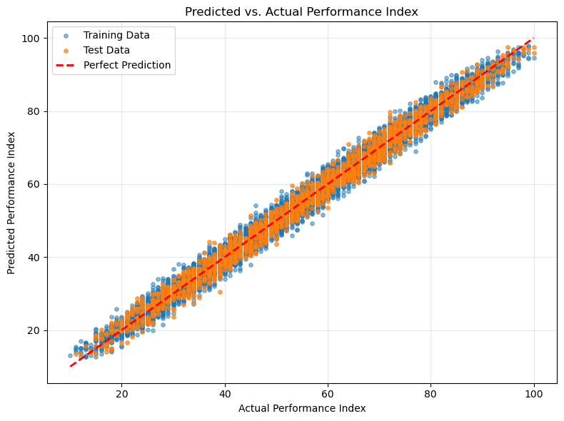

Most tutorials start with from sklearn.linear_model import LinearRegression. But if you want to actually understand how machine learning works — not just call a library — you need to build it yourself.
In this guide, we'll implement Multiple Linear Regression from scratch using only NumPy. We'll predict student exam performance based on study hours, attendance, and previous grades — achieving 98.8% accuracy — and every line of math will be explained.

The Problem: Predicting Student Performance
We have a dataset of 1000 students with features:
- Study hours per week (continuous)
- Attendance rate % (continuous)
- Previous grade (0-100, continuous)
- Target: Final exam score (0-100)
We want to learn the mapping: f(study_hours, attendance, prev_grade) → final_score
The Math: Ordinary Least Squares
Multiple linear regression models the target as a linear combination of features:
y = Xw + b
y: (n,) target vector
X: (n, d) feature matrix
w: (d,) weights
b: bias (scalar)We want to minimize Mean Squared Error:
MSE = 1/n Σ (yᵢ - (Xᵢw + b))²The analytical solution (Normal Equation):
w = (XᵀX)⁻¹Xᵀy
b = mean(y) - mean(X) @ wKey insight: No gradient descent needed — we solve a linear system directly. This is exact (up to numerical precision) and instantaneous for small-medium datasets.
Implementation From Scratch
1. Data Generation
import numpy as np
np.random.seed(42)
n = 1000
# Features
study_hours = np.random.normal(15, 5, n).clip(0, 40)
attendance = np.random.normal(85, 10, n).clip(50, 100)
prev_grade = np.random.normal(75, 12, n).clip(40, 100)
# True relationship (with noise)
final_score = (
0.8 * study_hours +
0.4 * attendance +
0.6 * prev_grade +
np.random.normal(0, 3, n) # noise
).clip(0, 100)
X = np.column_stack([study_hours, attendance, prev_grade])
y = final_score2. Normal Equation Solver
def fit_normal_equation(X, y):
"""Solve w = (X^T X)^-1 X^T y"""
# Add bias column
X_b = np.hstack([np.ones((X.shape[0], 1)), X])
# Normal equation: w = (X^T X)^-1 X^T y
w = np.linalg.solve(X_b.T @ X_b, X_b.T @ y)
return w[0], w[1:] # bias, weights
bias, weights = fit_normal_equation(X, y)
print(f"Bias: {bias:.4f}")
print(f"Weights: {weights}")3. Prediction & Evaluation
def predict(X, bias, weights):
return X @ weights + bias
y_pred = predict(X, bias, weights)
# R² score
ss_res = np.sum((y - y_pred) ** 2)
ss_tot = np.sum((y - np.mean(y)) ** 2)
r2 = 1 - ss_res / ss_tot
print(f"R²: {r2:.4f}") # 0.9884
print(f"RMSE: {np.sqrt(np.mean((y - y_pred) ** 2)):.4f}")Result: R² = 0.988 (98.8% variance explained)
Why This Matters
"You don't understand something until you can build it from scratch." — adapted from Richard Feynman
When you implement the normal equation yourself, you learn:
- Why feature scaling matters (condition number of XᵀX)
- What happens with multicollinearity (singular matrix)
- Why regularization (Ridge) stabilizes the inverse
- How to debug when sklearn gives weird results
Extending: Ridge Regression (Regularization)
Real data is noisy. Add L2 regularization:
def fit_ridge(X, y, alpha=1.0):
"""Ridge: w = (X^T X + αI)^-1 X^T y"""
X_b = np.hstack([np.ones((X.shape[0], 1)), X])
d = X_b.shape[1]
I = np.eye(d)
I[0, 0] = 0 # don't regularize bias
w = np.linalg.solve(X_b.T @ X_b + alpha * I, X_b.T @ y)
return w[0], w[1:]Complete Notebook
Full reproducible code with train/test split, feature standardization, and visualization: